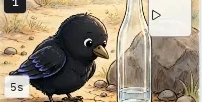
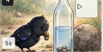
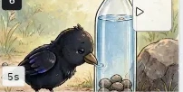

阶段暂停与双模式切换
支持「逐步确认」与「自动确认」两种节奏，在剧本、角色、分镜任一节点均可停下审阅修改



漫剧成片先规划故事大纲、角色形象与九宫格分镜，再生成动态画面、角色配音与背景音乐。全程在同一块画布上分阶段推进，随时暂停修改任意一镜

告别盲盒式抽卡生成 —— 传统工具把一段提示词直接扔进黑盒，一旦人物走形或动作穿帮只能整片重来；openOii 将漫剧制作拆解为透明的阶段画布，把每一镜的导演权交还给你
支持「逐步确认」与「自动确认」两种节奏，在剧本、角色、分镜任一节点均可停下审阅修改
角色立绘与故事宇宙资产贯穿全片，配合视觉质量审查自动把关多镜头人物形象一致
哪一幕构图或动作不满意，直接选中该分镜单独重画或改词，不波及已确认的其余镜头
点击左侧《乌鸦喝水》水彩分镜胶片（默认选中待微调的 S02），右侧导演修图台将同步展示该镜头的质量审查反馈与定点重绘效果


按项目自由开关角色配音、软硬字幕与背景音乐；支持历史版本对比，一键下载高清视频短片或导出 Webtoon 竖屏条漫长图
前后端与工作流引擎已完整容器化打包，启动后浏览器打开 localhost:15173 即可开始创作
git clone https://github.com/xeronsh/openOii.git && cd openOii && docker compose up -d